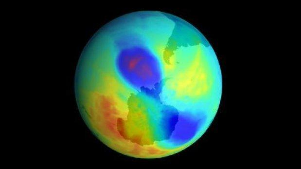
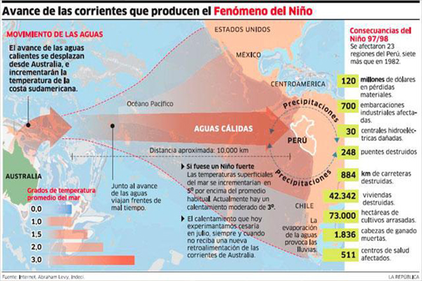

Científicos hallan el tercer mayor agujero en la capa de ozono
Científicos aseguraron que este nuevo récord no afecta el proceso de recuperación proyectado para la capa
La Organización Meteorológica Mundial (OMM) anunció que este mes se ha medido el tercer mayor agujero de la capa de ozono registrado, aunque aclaró que esto no contradice el proceso de recuperación de esta protección natural contra los rayos solares. "Esto muestra que el problema del agujero de ozono sigue con nosotros y que hay que mantenerse vigilante, pero no hay razón para una alarma indebida", aseguró el científico Geir Braathen, del Servicio Atmosférico de la OMM. La disminución de la capa de ozono ocurre anualmente durante la primavera en el hemisferio sur debido a las temperaturas extremadamente frías en la estratosfera (ubicada a unos 25 kilómetros de altura) y a la presencia en la atmósfera de gases que devoran el ozono. De acuerdo con la OMM, el promedio calculado durante 30 días del agujero de ozono ha sido de 26,9 millones de kilómetros cuadrados, lo que representa la tercera medida más importante después de los récords registrados en el 2000 y el 2006. Los científicos calcularon el récord para un solo día el pasado dos de octubre, cuando el agujero de capa de ozono alcanzó 28,2 kilómetros cuadrados, su dimensión máxima para este año. Las temperaturas en la estratosfera antártica varían de año en año, lo que hace que algunos años el agujero de la capa de ozono sea relativamente pequeño y otros relativamente grande. "De manera general, esto no revierte la recuperación de largo plazo para la capa de ozono que se proyecta en las próximas décadas", indicó la OMM.
Fenómeno El Niño: doce pueblos vulnerables en Chimbote
Uno de los más afectados sería el pueblo joven San Pedro, ya que las fueres lluvias podrían provocar deslizamientos. Unos 12 pueblos del distrito de Chimbote, región Áncash, se encuentran en una situación vulnerable ante la llegada del fenómeno climático El Niño, así lo dio a conocer el secretario técnico del Comité Provincial de Defensa Civil, Guillermo Abril. Precisó que uno de los más afectados por las fuertes lluvias que se han anunciado, sería el pueblo joven San Pedro, ya que las precipitaciones pluviales podrían provocar deslizamientos. Abril detalló que otros sectores vulnerables son La Primavera y la Esperanza Alta y Baja. Sostuvo, además, que están elaborando un inventario casa por casa a través de los brigadistas para establecer las zonas de riesgo y definir las áreas más seguras.